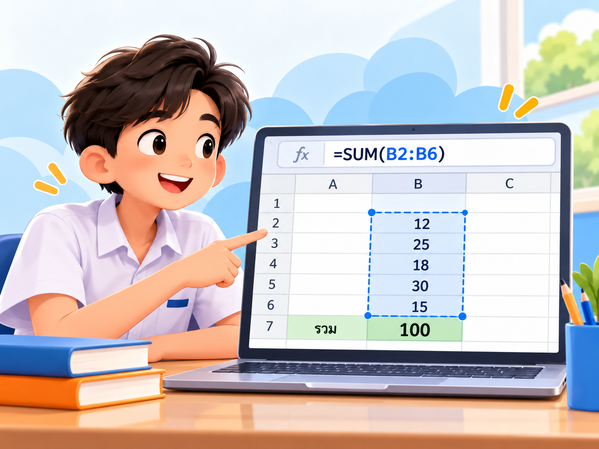
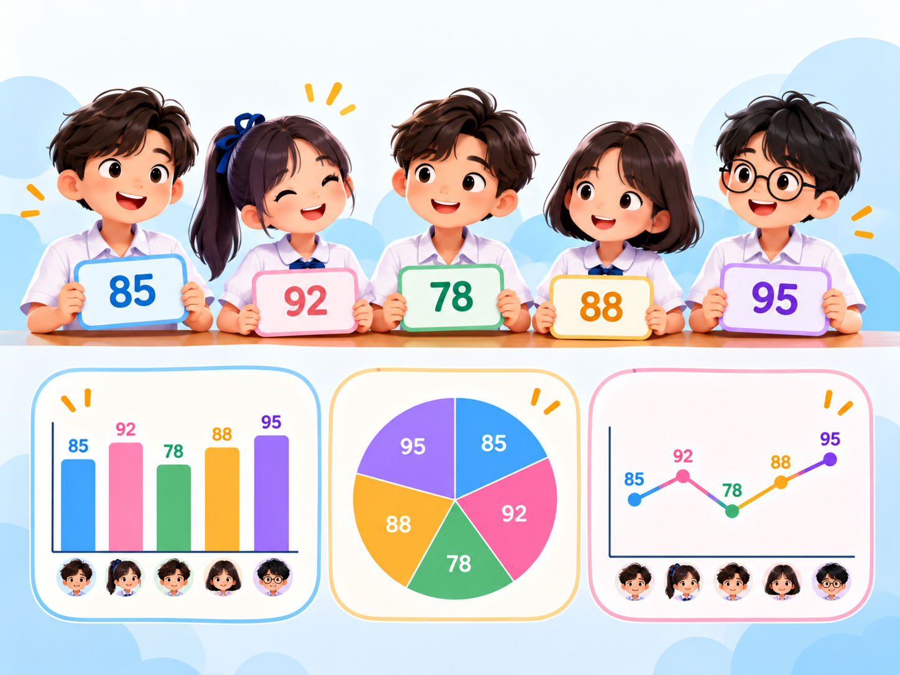

CHALLENGE 01
มีเงิน 10,000 บาท
จะเลือกมือถือเครื่องไหน?
ลองเลือกจากสิ่งที่เห็นก่อน — ตอนนี้ยังไม่มีข้อมูลสเปก
เลือกได้เลย แล้วลองคิดว่า “เราใช้เหตุผลอะไรในการเลือก?”
ลองเลือกจากสิ่งที่เห็นก่อน — ตอนนี้ยังไม่มีข้อมูลสเปก
5 ข้อ · ตอบจากความเข้าใจเดิม ไม่ต้องกังวลเรื่องคะแนน
ตัวเลข ข้อความ หรือข้อเท็จจริงที่เรารวบรวมไว้ เพื่อใช้ตอบคำถาม วางแผน หรือตัดสินใจ
| รุ่น | ราคา | แบตเตอรี่ | ความจุ | รีวิว |
|---|---|---|---|---|
| A | 8,990 | 5,000 mAh | 128 GB | 4.3 |
| B | 9,990 | 6,000 mAh | 256 GB | 4.7 |
| C | 12,900 | 5,000 mAh | 256 GB | 4.8 |
| D | 7,490 | 4,000 mAh | 128 GB | 4.1 |
| E | 10,500 | 5,500 mAh | 256 GB | 4.5 |
| รุ่น | ราคา | แบตเตอรี่ | ผล |
|---|---|---|---|
| A | 8,990 | 5,000 mAh | รอตรวจ |
| B | 9,990 | 6,000 mAh | รอตรวจ |
| C | 12,900 | 5,000 mAh | รอตรวจ |
| D | 7,490 | 4,000 mAh | รอตรวจ |
| E | 10,500 | 5,500 mAh | รอตรวจ |

นักเรียนส่วนใหญ่เลือกรุ่น A

ข้อมูลถูกต้อง → AI มีพื้นฐานที่น่าเชื่อถือกว่า
ข้อมูลครบและตรงคำถาม → AI สรุป/จัดหมวดหมู่ได้ชัดขึ้น
ข้อมูลเป็นระเบียบ → ตรวจคำตอบ AI กลับกับหลักฐานได้ง่าย
กติกา: เหตุผลต้องอ้างอิงข้อมูลอย่างน้อย 2 ข้อ
เลือกคำถามใกล้ตัว 1 เรื่อง แล้วใช้ข้อมูลจริงหาคำตอบอย่างเป็นระบบ
เก็บข้อมูลจริงอย่างน้อย 10 รายการ
ประมวลผลSort / Filter / สูตร อย่างน้อย 1 วิธี
สร้างกราฟเลือกแบบที่เหมาะกับคำถาม 1 แบบ
สรุปข้อค้นพบอย่างน้อย 2 ข้อ + การตัดสินใจ
ในไฟล์มีคำชี้แจง ตารางเก็บข้อมูล ช่องประมวลผล พื้นที่กราฟ และส่วนสรุปผลครบแล้ว